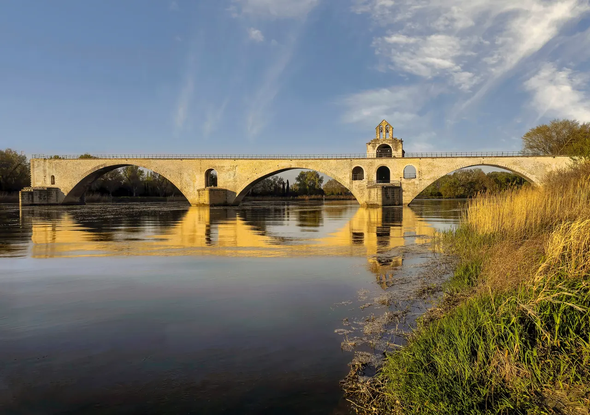

{kind=link}

Carrières des Lumières
높이 15m 거대한 지하 백색 석회암 채석장 동굴 전체를 디지털 캔버스로 변모시킨 세계 최초·최대 규모의 몰입형 미디어 아트 공간. 7,000㎡ 암벽과 바닥을 감싸는 빛과 음악의 향연.

프랑스 민요 「아비뇽 다리 위에서(Sur le Pont d'Avignon)」로 전 세계에 널리 알려진 12세기 로마네스크 석조 교량의 상징적 유적(유네스코 세계유산)이다.
1177년 목동 베네제(Bénézet)의 종교적 계시로 건설되기 시작하여, 완공 당시 리옹(Lyon)과 지중해 바다 사이 론(Rhône) 강을 건널 수 있었던 길이 920m, 22개 아치 규모의 유일한 고정 교량이었다.
단순한 보행로가 아니라 교황령 아비뇽과 론 강 건너 프랑스 왕국의 국경을 잇는 군사 통제선이자 무역 관세 징수소였으며, 거친 론 강의 범람과 소빙하기(Little Ice Age)의 수문학적 변화로 끊어진 현재의 4개 아치 실루엣이 강물 위에 시적인 여운을 남긴다.
"다리가 왜 중간에서 끊어졌는지를 이해할 때 론 강의 거대한 수량과 아비뇽의 국경 지정학이 비로소 보인다." 다리 상판을 걸어 끝자락의 2층 생니콜라 예배당(Chapelle Saint-Nicolas)을 둘러보고, 교각 아래 강물 소리를 들은 뒤, 맞은편 바르틀라스(Barthelasse) 섬이나 돔 바위 전망대에서 끊어진 다리의 전경을 조망하는 30~45분 코스로 적합하다.
| 운영시간 | 4/3~11/1 09:00~19:00 (매표 마감 18:30) |
|---|---|
| 휴무 | 연중무휴 (매일 개방) |
| 요금 | 통합권(궁+정원+다리) €19.50 |
| 예약 | 예약 필수 아님. 온라인·관광안내소·현장 매표 모두 가능 (온라인 권장) |
| 소요시간 | 55분 재확인 |
다리는 단순한 통로가 아니라 국가 간의 국경이었다. - 동쪽 (아비뇽): 교황령 군대가 지키는 샤틀레(Châtelet) 성문. - 서쪽 (빌뇌브-레-자비뇽): 프랑스 국왕의 영토로, 프랑스 왕실의 위세를 과시하는 필리프 르 벨 탑(Tour Philippe-le-Bel)이 다리 건너편을 삼엄하게 통제했다.
| 항목 | 상세 정보 |
|---|---|
| 위치 | Boulevard de la Ligne, 84000 Avignon |
| 운영 시간 | 매일 09:00–19:00 (입장 마감 18:30) |
| 입장료 | 단독 입장 성인 €5.00 / Palais des Papes + Pont 통합권 €14.50 (적극 권장) |
| 오디오가이드 | 한국어 포함 다국어 오디오가이드 무료 대여 (다리 입구 박물관) |
| 최고의 조망 포인트 | 다리 위뿐만 아니라, Rocher des Doms 상부 테라스 또는 강 건너 Île de la Barthelasse 강변 산책로에서 다리의 절단면과 교황궁을 함께 바라보는 구도가 최상 |
| 접근 & 페리 | 다리 북쪽 200m 지점에서 바르틀라스 섬으로 건너가는 무료 친환경 연락선(Navette fluviale) 하절기 운항 |
높이 15m 거대한 지하 백색 석회암 채석장 동굴 전체를 디지털 캔버스로 변모시킨 세계 최초·최대 규모의 몰입형 미디어 아트 공간. 7,000㎡ 암벽과 바닥을 감싸는 빛과 음악의 향연.

기원전 6세기 켈트 성소에서 헬레니즘 도시를 거쳐 로마 제국의 온천 휴양도시로 번영했던 거대한 고대 발굴 유적지. 갈리아에서 가장 완벽하게 보존된 기원전 1세기 로마 영묘와 개선문 '레 장티크(Les Antiques)'.

알피유(Alpilles) 산맥 해발 245m 석회암 절벽 위에 우뚝 솟은 중세 독수리 요새 마을. 자연 암반과 성벽이 하나로 결합된 레보 성채(Château des Baux) 폐허와 올리브 계곡 대파노라마.

세계적인 식물학자 파트리크 블랑의 300㎡ 거대한 수직 정원(Mur Végétal) 외벽 아래 40여 개 프로방스 전통 식재료 좌판이 모인 아비뇽의 활기찬 실내 중앙 미식 시장.

14세기 가톨릭 교황청이 로마를 떠나 68년간 머물렀던 서유럽 최대의 중세 고딕 요새 궁전. 베네딕토 12세의 구궁전과 클레멘스 6세의 신궁전, 마테오 조바네티의 프레스코화와 히스토패드 3D 증강현실 복원.

우제스의 외르 샘에서 고대 로마 식민도시 님(Nîmes)까지 50km를 오직 중력만으로 흐르게 한 기원 1세기 3층 로마 수도교. 높이 48.8m 세계 최고(最高)의 고대 수력 토목공학 걸작(유네스코 세계유산).